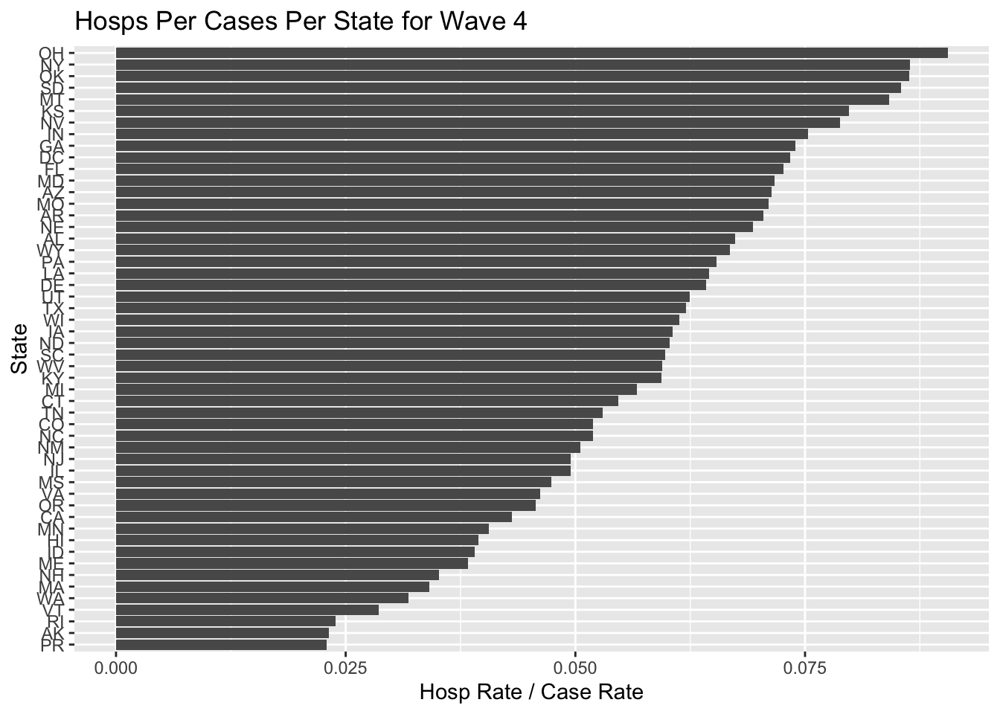

Supplementary Methods
BST 210: Final Project
Julia Capperella, Grace Gaultier, Kathryn Saxton
Supplementary Methods
Equations
Equation 1: Population Calculation \[ \mbox{growth rate} = \frac{population_{2021} - population_{2020}}{population_{2020}} \] \[ \mbox{population prediction} = population_{2021} \times (1+ \mbox{growth rate}) ^ \mbox{years since 2021} \]
Equation 2: Rate Calculation \[ \mbox{rate per 100,000 people} = 100000 * \frac{\mbox{count}}{\mbox{population}} \]
Equation 3: Excess Mortality Calculations Excess deaths are an interesting measurement to analyze. Excess mortality is the difference between the total number of deaths occuring and the expected number of deaths, calculated based on historical seasonal trends. A positive value indicates that COVID-19 may have been responsible for increased the number of deaths, rather than seasonal fluctuations alone. \[ \mbox{expected deaths} = \frac{\mbox{total deaths}}{\frac{\mbox{percent of expected deaths}}{100}} \] \[ \mbox{excess mortality} = \mbox{total deaths - expected deaths} \]
Plots and Tables
SI Figure 1: Average Covid 19 Cases, Deaths and Hospitalizations per 100,000 People Over Time
SI Figures 2-6: Covid 19 Death Rates by State for each Wave
SI Table 1: State Performance By Death Rate per 100k People
| State | Top 5 Frequency | Bottom 5 Frequency |
|---|---|---|
| Hawaii | 3 | 0 |
| Washington | 3 | 0 |
| New York | 3 | 0 |
| Vermont | 3 | 1 |
| Oregon | 2 | 0 |
| Puerto Rico | 2 | 0 |
| Alaska | 2 | 0 |
| Utah | 2 | 0 |
| Wyoming | 2 | 2 |
| Texas | 1 | 0 |
| Massachusetts | 1 | 1 |
| New Jersey | 1 | 1 |
| Connecticut | 1 | 1 |
| Washington D.C. | 0 | 1 |
| North Dakota | 0 | 1 |
| South Dakota | 0 | 1 |
| Ohio | 0 | 1 |
| New Mexico | 0 | 1 |
| Montana | 0 | 1 |
| Delaware | 0 | 1 |
| Maine | 0 | 1 |
| Rhode Island | 0 | 2 |
| Oklahoma | 0 | 2 |
| West Virginia | 0 | 2 |
| Kentucky | 0 | 2 |
SI Figures 7-11: Excess Mortality Rates by State for each Wave
SI Figures 12-16: Excess Mortality Rates by State for each Wave
SI Figures 17-21: Virulence Rates Over Time For Each Wave
SI Figures 22-26: Virulence – Deaths Per Cases Per State For Each Wave

SI Figures 27-31: Virulence – Hospitalizations Per Cases Per State For Each Wave

SI Figures 32-36: Virulence – Deaths Per Hospitalizations Per State For Each Wave